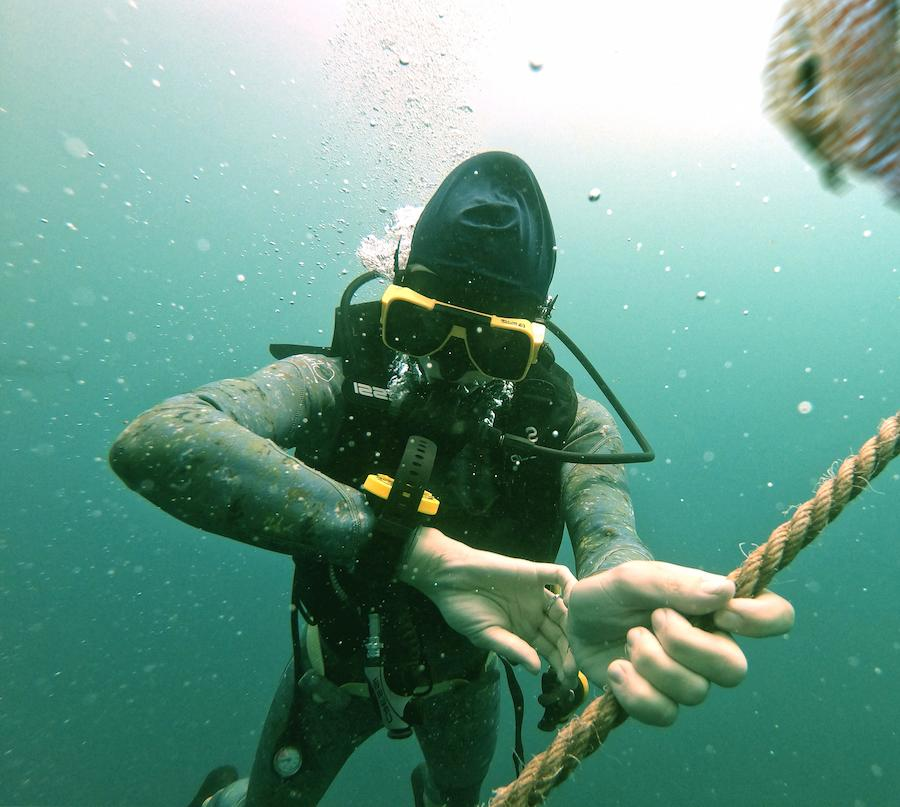
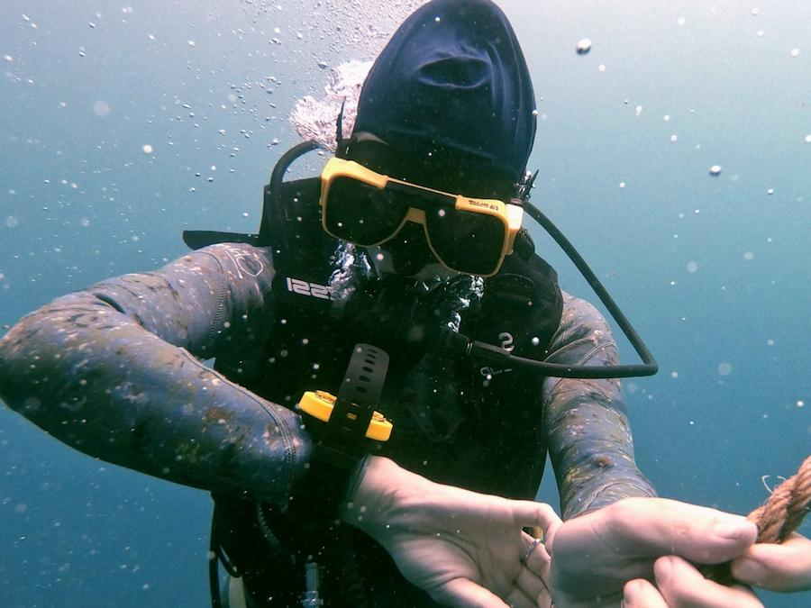
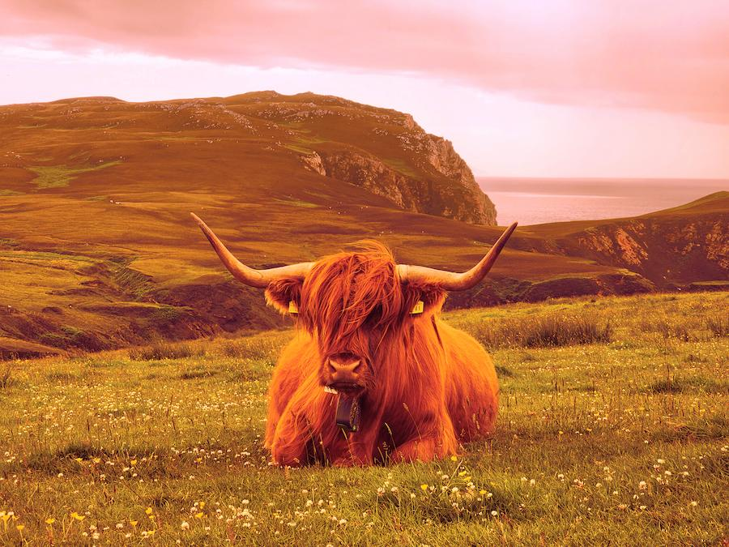
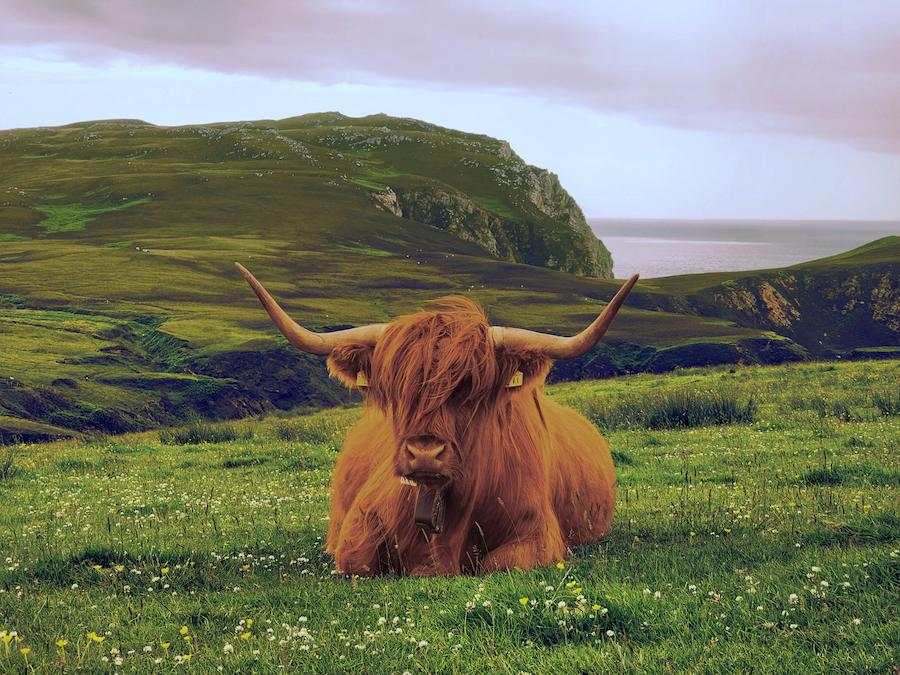
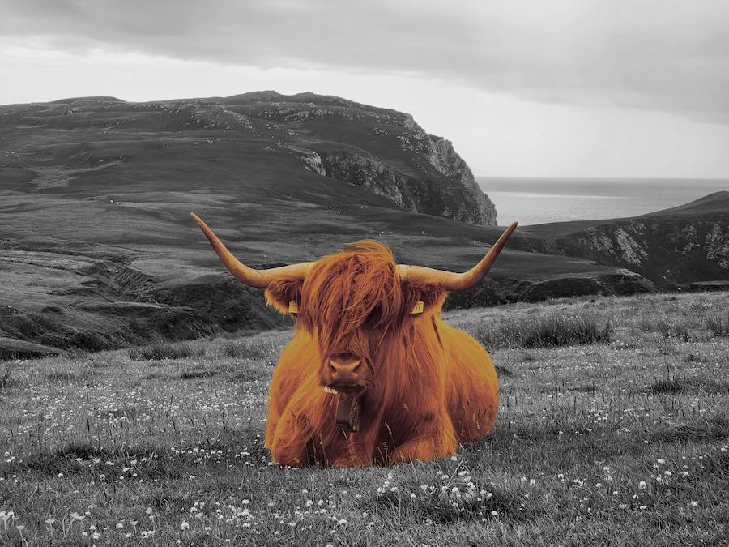
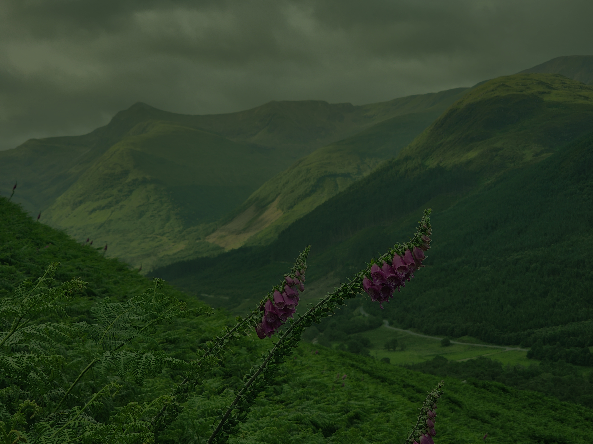
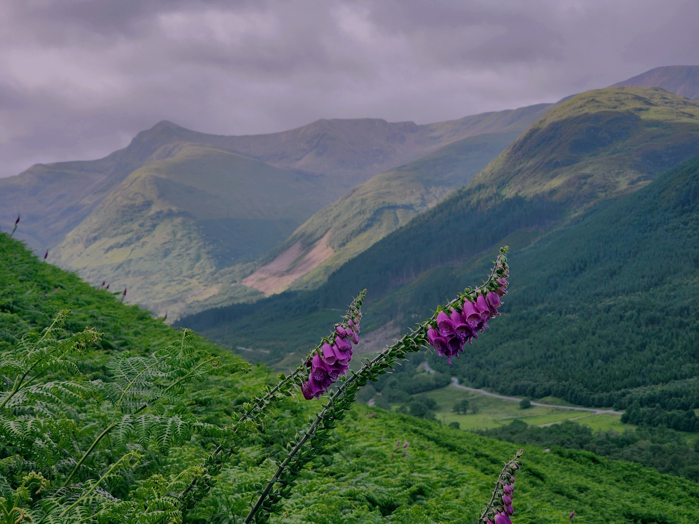

Min Portfölj



I denna bild ändrade jag på färg balansen på RGB och drog ner på den gröna tonen medan jag drog upp den blå och den röda tonen. Jag valde sen att förstora bilden för att klippa ut fisken.



I denna bild ändrade jag på färg balansen på RGB då bilden hade en väldigt stark orange ton. Jag justerade även ljuset på bilden för att för att försöka få en bättre ljusstyrka på den. Jag valde även att klippa ut kon för att få en bättre komposition på bilden. Vilket ledde till att jag gjorde en snabb B&W bakgrund på den.


I denna bild ändrade jag på färg balansen på nästan enbart grön då den hade en väldigt stark grön ton. Jag justerade även ljuset på bilden för att få en bättre kontrast på den. Till sist valde jag att ändra blommornas färg till en röd färg.